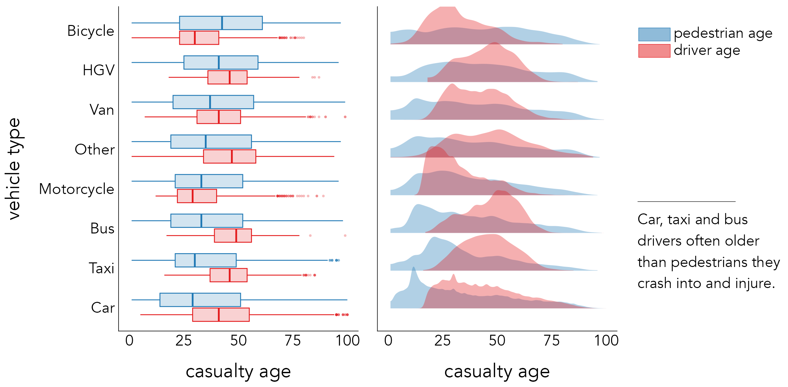
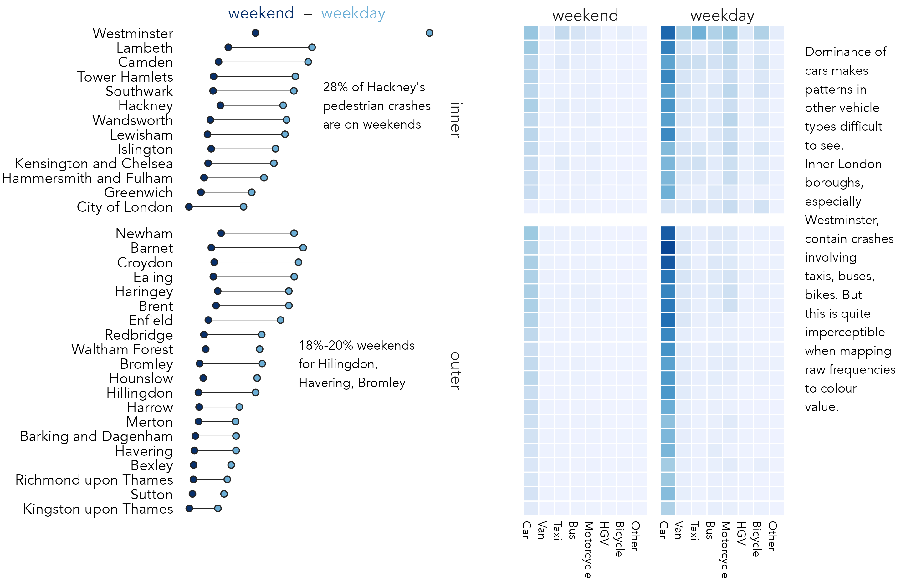

4 Exploratory Data Analysis
By the end of this chapter you should gain the following knowledge and practical skills.
4.1 Introduction
Exploratory Data Analysis (EDA) is an approach to analysis that aims to expose the properties and structure of a dataset, and from here suggest directions for analytic inquiry. In an EDA, relationships are quickly inferred, anomalies labelled, data-generating processes (models) suggested and evaluated. EDA relies heavily on visual approaches to analysis; it is common to generate many dozens of often throwaway data graphics when exploring a dataset for the first time.
This chapter demonstrates how the concepts and principles introduced previously, of data types and their visual encoding, can be applied to support EDA. It does so by analysing STATS19, a dataset containing detailed information on every reported road traffic crash in Great Britain that resulted in personal injury. STATS19 is highly detailed, with many categorical variables. The chapter starts by revisiting commonly used chart types for summarising within-variable variation and between-variable co-variation in a dataset. It then focuses more directly on the STATS19 case, and how detailed comparison across many categorical variables can be effected using colour, layout and statistical computation.
4.2 Concepts
4.2.1 Exploratory data analysis and statistical graphics
In Exploratory Data Analysis (EDA), graphical and statistical summaries are used to build knowledge and understanding of a dataset. The goal of EDA is to infer relationships, identify anomalies and test new ideas and hypotheses; it is a knowlegde-building activity. Rather than a formal set of techniques, EDA should be considered an outlook to analysis. It aims to reveal properties, patterns and relationships in a dataset, and from there expectations, codified via models, to be further investigated in context via more targeted data graphics and statistics.
The early stages of an EDA may be very data-driven. Datasets are described abstractly according to their measurement level and corresponding data graphics and summary statistics suggested from these descriptions (e.g. Table 4.1). As knowledge and understanding of the dataset increases, researchers might apply more targeted theory and prior knowledge when developing and evaluating models.
Visual approaches play an important role in both these stages of analysis. For example, when first examining variables according to their shape and location (e.g. Table 4.1) data graphics help identify patterns that statistical summaries miss; such as whether variables are multi-modal, the extent and direction of outliers. When more specialised models are proposed graphical summaries can add important detail around where, and by how much, the observed data depart from the model. It is for this reason that data visualization is seen as intrinsic to EDA (Tukey 1977).
| Measurement type | Statistic | Chart type |
|---|---|---|
| Within-variable variation | ||
| Nominal | mode | entropy | bar charts, dot plots ... |
| Ordinal | median | percentile | bar charts, dot plots ... |
| Continuous | mean | variance | histograms, box plots, density plots ... |
| Between-variable variation | ||
| Nominal | contingency tables | mosaic/spine plots ... |
| Ordinal | rank correlation | slope/bump charts ... |
| Continuous | correlation | scatterplots, parallel coordinate plots ... |
4.2.2 Plots for continuous variables
Within-variable variation
Figure 4.1 presents statistical graphics that are commonly used to show continuous variables measured on a ratio and interval scale – in this instance the age of casualty for a random sample of recorded road crashes in which pedestrains were injured (casualty_age).

In the left-most column is a strip-plot. Every observation is displayed as a dot and mapped to y-position, with transparency and a random horiztontal perturbation applied to resolve occlusion due to overlapping observations. Although strip-plots scale poorly, the advantage is that all observations are displayed without needing to impose some aggregation. It is possible to visually identify the location of the distribution – denser dots towards the youngest ages (c.20 years) – but also that there is spread across the age values.
Histograms partition observations into equal-range bins and observations in each bin are counted. These counts are encoded on an aligned scale using bar length. Increasing the size of the bins increases the resolution of the graphical summary. If reasonable decisions are made around choice of bin, histograms give distributions a shape that is expressive. It is easy to identify the location of a distribution, to see that it is unimodal. Different from the strip-plot, the histogram shows that despite the heavy spread, the distribution of casualty_age is right-skewed, and we’d expect this given the location of the mean (36 years) relative to the median (30 years).
A problem with histograms is the potential for discontinuities and artificial edge-effects around the bins. Density plots overcome this and can be thought of as smoothed histograms. They show the probability density function of a variable – the relative amount of probability attached to each value of casualty_age. From glancing at the density plots an overall shape to the distribution can be immediately derived. It is also possible to infer statistical properties: the mode of the distribution, the peak density; the mean and median, by sort of visual averaging and approximating the midpoint of the area under the curve.
Finally, boxplots (McGill and Larsen 1978) encode these statistical properties directly. The box is the interquartile range (IQR) of the casualty_age variable, the vertical line splitting the box is the median, and the whiskers are placed at observations \leq 1.5*IQR. Whilst we lose important information around the shape of a distribution, box-plots are space-efficient and useful for comparing many distributions at once.
Since the average age of pedestrian road casualties is surprisingly low, it may be instructive to explore the distribution of casualty_age conditioning on another variable and differentiating between variable values using colour. Figure 4.2 displays boxplots and density plots of the location and spread in casualty_age by vehicle and casualty_class for all crashes involving pedestrians. A noteworthy pattern is that riders of bicycles and motorcycles tend to be younger than the pedestrians they are contacting with, whereas for buses, taxis, HGVs and cars the reverse is true. Pedestrians involved in crashes with cars are especially skewed towards the younger ages.

Between-variable variation
The previous chapter included several scatterplots for exploring associations in electoral voting behaviour. Scatterplots are used to check whether the association between variables is linear, but also to make inferences about the direction and intensity of linear correlation between variables – the extent to which values in one variable depend on the values of another – and also around the nature of variation between variables – the extent to which variation in one variable depends on another, or heteroscedasticity. Although other chart types for displaying bivariate data exist, empirical studies in Information Visualization have demonstrated that aggregate correlation statistics can be reliably estimated from scatterplots (Rensink and Baldridge 2010; Harrison et al. 2014; Kay and Heer 2016; Correll and Heer 2017).
There are few variables in the STATS19 dataset measured on a continuous scale. In an EDA it is common to quickly compare associations between many quantitive variables in a dataset using scatterplot matrices or alternatively parallel coordinate plots. We will use both in Chapter 6 when building models that attempt to formally structure and explain between-variable covariation, again on an electoral voting use case.
4.2.3 Plots for categorical variables
Within-variable variation
For categorical variables, within-variable variation is judged on how relative frequencies distribute across the variable’s categories. Bar charts are commonly used, with length an efficient visual channel for encoding frequncies. When analysin variation aceoss several categories it is useful to flip bar charts on their side so that category labels are arranged horizontally for ease of reading and, unless there is a natural ordering, arrange the bars in descending order based on their frequency. This demonstrated in Figure 4.3, which shows frequencies of vehicles involved in pestrian casualties.

For summarising frequencies across many categories alternative chart types that minimise non-data-ink, such as Cleveland dot plots may be appropriate. The left plot in Figure 4.4 displays pedestrian crash counts for boroughs in London, ordered by crash frequency, grouped by whether boroughs are in inner- or outer- London and coloured according to whether crashes took place on weekdays or weekends. Lines connecting dots emphasise the differences in absolute numbers between time periods. Although a consistent pattern is of greater crash counts during weekdays, the gap is less obvious four outer London boroughs; there may be in relative terms many more pedestrian crashes occurring in central London boroughs during weekdays. The third graphic is a heatmap with the same ordering and grouping of boroughs, but with columns coloured according to crash frequencies by vehicle type, further grouped by weekday and weekend times. Remembering Munzner (2014)’s ordering of visual channels, we trade-off some precision in estimation when encoding frequencies in heatmaps. A greater difficulty, irrespective of encoding channel, comes from the dominance of cars and weekdays; variation between vehicle types and time periods outside of this is almost imperceptible.

Between-variable covariation: standardised bars and mosaic plots
In Figure 4.4 we began to make between-category comparison; we asked whether there are relatively greater or fewer crashes by time period or vehicle type in certain boroughs than others. There are chart types that explicitly support these sorts of analysis tasks. Figure 4.5 compares pedestrian crash frequencies in London by vehicle type involved and whether the crash occured on weekdays or weekends.

First, stacked bars are ordered by frequency, distinguishing time period using colour lightness. Cars are by far the dominant travel mode, contributing the largest number of crashes resulting in injury to pedestrians. Whether or not pedestrian injuries involving cars occur relatively more on weekends than other modes is not clear from the left-most chart. Length encodes absolute crash counts effectively but relative comparison on time periods between vehicle types is challenging. In standardised bars the absolute length of bars is fixed and bars are split according to proportional weekday / weekend crashes (middle). The plot is also annotated according to the expected proportion of weekday crashes if crashes occurred by time period independently of vehicle type (22%). This encoding shows pedestrian crashes involving taxis occur in much greater frequency than would be expected at weekends, whilst the reverse is true of crashes involving vans, bikes and HGVs. However, we lose a sense of the absolute numbers involved.
Failing to encode absolute number – the amount of information in support of some observed pattern – is a problem in EDA. Since proportional summaries are agnostic to sample size, they can induce false discoveries, overemphasising patterns that may be unlikely to replicate in out-of-sample tests. It is sometimes desirable, then, to update standardised bar charts so that they are weighted by frequency: to make more visually salient those categories that occur more often and visually downweight those that occur less often. This is possible using mosaic plots (Friendly 1992). Bar widths and heights are allowed to vary; so bar area is proportional to absolute number of observations and bars are further subdivided for relative comparison across category values. Mosaic plots are useful tools for exploratory analysis. That they are space-efficient and regularly sized, means they can be flexibly laid out for comparison.
The mosaic plot in Figure 4.5 was generated using the ggmosaic package, an extension to ggplot2.
Encoding variation from expectation
The heatmap in Figure 4.4 is hampered by the dominating effect of cars and weekdays. Any additional structure by time period and vehicle type in boroughs outside of this is visually unintelligible. An alternative approach could be to colour cells according to some relevant effect size statistic: for example, differences in the proportion of weekend crashes occurring in any vehicle-type and borough combination against the global average proportion, or expectation, of 22% of crashes occurring on weekends. Diminishing sample sizes in certain borough-vehicle type combinations nevertheless means such an encoding risks overstating large proportional effects based on negligible differences in absolute crash frequencies.
There are measures of effect size sensitive both to absolute and relative differences from expectation. Signed chi-score residuals (Visalingam 1981), for example, represent expected values as counts separately for each category combination in a dataset – in this case, pedestrian crashes recorded in a borough in a stated time period involving a stated vehicle type. Observed counts (O_i ... O_n) are then compared to expected counts (E_i ... E_n) as below:
\chi=\frac{O_i - E_i}{\sqrt{E_i}}
The way in which differences between observed and expected values (residuals) are standardised in the denominator is important. If the denominator was simply the raw expected value, the residuals would express the proportional difference between each observation and its expected value. The denominator is instead transformed using the square root (\sqrt{E_i}), which has the effect of inflating smaller expected values and squashing larger expected values in the denominator, thereby giving greater saliency to differences from expectation that are large in both relative and absolute number.
Figure 4.6 updates the heatmaps with signed residuals encoded using a diverging colour scheme (Brewer and Campbell 1998) – red for cells with greater crash counts than expected, blue for cells with fewer crash counts than expected. The assumption in the first heatmap is that crash counts by borough distribute independently of vehicle type. Laying out the heatmap such that inner and outer London boroughs are grouped for comparison is instructive: fewer than expected crashes in inner London are recorded for cars; greater than expected for all other vehicle types but especially taxis and bicycles. This pattern is strongest (largest residuals) for very central boroughs, where pedestrian crash frequencies are also likely to be highest and where cars are comparatively less dominant as a travel mode. For almost all boroughs, again especially central London boroughs, there is a clear pattern of modes other than cars, taxis and buses overrepresented amongst crashes occurring on weekdays, again reflecting the transport dynamics of the city.

4.2.4 Strategies for supporting comparison
A key role for data graphics in EDA is in supporting comparison. Three strategies typically deployed are juxtaposition, superposition and direct encoding (see Gleicher and Roberts 2011). Table 4.2 defines each and identifies how they can be implemented in ggplot2.
| Strategy | Function | Use |
|---|---|---|
| Juxtaposition | faceting | Create separate plots in rows and/or columns by conditioning on a categorical variable. Each plot has same encoding and coordinate space. |
| Juxtaposition | pkg: patchwork | cowplot | Flexibly arrange plots of different data type, encoding and coordinate space |
| Superposition | geoms | Layering marks on top of each other. Marks may be of different data types but must share the same coordinate space. |
| Direct encoding | NA | No strategy specialised to direct encoding. Often variables cross 0, so diverging schemes, or graphics with clearly annotated and symbolised thresholds are used. |
As with most visualization design, each involves trade-offs and so careful decision-making. In Figure 4.4 dotplots representing counts of weekend and weekday crashes are superposed on the same coordinate space, with connecting lines added to emphasise difference. This strategy is fine where two categories of similar orders of magnitude are compared, but if instead all eight vehicle types were to be encoded in the same way, superposed with categories differentiated using colour and a dominating modal category (cars), the plot would be substantially more challenging to process. In Figure 4.6, comparison by vehicle type is instead effected using direct encoding – residuals coloured above or below an expectation. Notice also the use of containment, juxtaposition and layout in both plots. By containing frequencies for inner- and outer- London boroughs in separate, juxtaposed plots, and within each laying out plot elements top-to-bottom on frequency, the systematic differences in the composition of vehicle types involved in crashes between inner- and outer- London can be inferred.
Comparison and layout
Layout is an extremely important property in visual data analysis. Judiciously laid out data graphics can help explore and test complex patterns that would be difficult to capture through numerical summaries alone. In Figure 4.7 mosaic plots of crash frequencies (bar height) and relative number of weekday/weekend crashes (dark bar width) are presented for each borough in London, with plots for vehicle type juxtaposed side-by-side for comparison. Rather than laying out boroughs top-to-bottom on frequency, boroughs are given an approximate spatial arrangement, generated using the gridmappr package. This arrangement enables several patterns to be quickly inferred. From it, we can observe that pedestrian crashes involving bicycles and motorcycles generally occur more in central London boroughs; those involving cars occur in greater relative number during weekends, especially so for those that take place in central London boroughs; and, different from other vehicle types, pedestrian crashes involving cars occur in similarly large numbers in outer London boroughs (Barnet, Croydon) as inner London boroughs such as Westminster.

4.3 Techniques
The technical element to this chapter continues with the STATS19 road crash data. Rather than a how-to guide for generating exploratory analysis plots in R, the section aims to demonstrate a workflow for exploratory visual data analysis:
- Expose pattern
- Model an expectation derived from pattern
- Show deviation from expectation
It does so by exploring the characteristics of individuals involved in pedestrian crashes, with a special focus on inequalities. Research suggests those living in more deprived neighbourhoods are at elevated risk of road crash injury than those living in less-deprived areas (Vidal Tortosa et al. 2021). A follow-up question is around the characteristics of those involved in crashes. To what extent do drivers share demographic characteristics with the pedestrians they crash into, and does this vary in expected ways by the location in which crashes take place?
4.3.1 Import
- Download the 04-template.qmd file for this chapter and save it to the
reportsfolder of yourvis4sdsproject. - Open your
vis4sdsproject in RStudio and load the template file by clickingFile>Open File ...>reports/04-template.qmd.
The presented analysis is based on that published in Beecham and Lovelace (2022) and investigates vehicle–pedestrian crashes in STATS19 between 2010 and 2019, where the Indeces of Multiple Deprivation (IMD) class of the pedestrian, driver and crash location is recorded.
STATS19 is a form used by the police to record road crashes that result in injury. Raw data are released by the Department for Transport, but can be also accessed via the stats19 R package. The data are organised into three tables:
-
Accidents (or Crashes): Each observation is a recorded road crash with a unique identifier (
accident_index), date (date), time (time) and location (longitude,latitude). Many other characteristics associated with the crashes are also stored in this table. -
Casualties: Each observation is a recorded casualty that resulted from a road crash. The Crashes and Casualties data can be linked via the
accident_indexvariable. As well ascasualty_severity(Slight,Serious,Fatal), information on casualty demographics and other characteristics is stored in this table. -
Vehicles: Each observation is a vehicle involved in a crash. Again Vehicles can be linked with Crashes and Casualties via the
accident_indexvariable. As well as the vehicle type and manoeuvre being made, information on driver characteristics is recorded in this table.
An .fst dataset that uses these three tables to record pedestrian crashes with associated casualty and driver characteristics has been stored in the book’s accompanying data repository.
4.3.2 Sample
The focus of our analysis is inequalities in the characteristics of those involved in pedestrian crashes. There is only high-level information on these characteristics in the STATS19 dataset. However, the Indices of Multiple Deprivation (Noble et al. 2019) quintile of the small area neighbourhood in which casualties and drivers live is recorded, and we have separately derived the IMD quintile of the neighbourhood in which crahses took place.
Not all recorded crashes contain this information and first create a new dataset – ped_veh_complete – identifying those linked crashes where the full IMD data are recorded:
The dataset contains c. 49,000 observations, 23% of linked pedestrian crashes. Although this is a large number, there may be some systematic bias in the types of pedestrian crashes for which full demographic data are recorded, a challenge often encountered when datasets are repurposed for analysis. For brevity, we will not extensively investigate this bias, but below ‘record completeness rates’ are calculated for selected crash types. As anticipated, lower completeness rates appear for crashes coded as Slight in injury severity, but there are also lower completeness rates for crashes occurring in the highest deprivation quintile.
| Crash category | Completeness rate |
|---|---|
| Casualty severity | |
| Fatal | 26% |
| Serious | 26% |
| Slight | 20% |
| IMD class of crash location | |
| 5 Least deprived | 25% |
| 4 Less deprived | 25% |
| 3 Mid deprived | 24% |
| 2 More deprived | 23% |
| 1 Most deprived | 19% |
This difference in record completeness may reflect genuine differences in recording behaviour for crashes occurring in high deprivation neighbourhoods, or it might be a function of some confounding context. For example, one might expect crashes more serious in nature to be reported in greater detail and so have higher completion rates. If crashes resulting in slight injuries are overrepresented in high deprivation areas, this might explain the pattern of completeness rates by deprivation area. To explore this further completeness rates are calculated separately by crash injury severity (Figure 4.8). This demonstrates, as expected, higher completion rates for crashes resultng in more serious injury, but that record completion rates are still lower for crashes taking place in the high deprivation neighbourhoods.

The code for Figure 4.8:
ped_veh |>
mutate(
is_complete=accident_index %in% (ped_veh_complete |> pull(accident_index)),
is_ksi=if_else(accident_severity != "Slight", "Fatal | Serious", "Slight")
) |>
group_by(crash_quintile, is_ksi) |>
summarise(prop_complete=mean(is_complete)) |>
ggplot() +
geom_point(aes(y=crash_quintile, x=prop_complete, colour=is_ksi), size=2) +
scale_colour_manual(values=c("#67000d", "#fb6a4a")) +
scale_x_continuous(limits=c(0.1,.4))A breakdown of the ggplot2 spec:
-
Data: A boolean variable,
is_complete, is defined by checkingaccident_indexagainst those contained in theped_veh_completedataset. Note that thepull()function extractsaccident_indexfrom the complete dataset as a vector of values. A boolean variable (is_ksi) also to group and separate Fatal and Serious injury outcomes from those that are Slight. We then group oncrash_quintileandis_ksito calculate completeness rates by severity and crash location. Sinceis_completeis a boolean value (false=0,true=1), its mean is the proportion oftruerecords, in this case those with a complete status. -
Encoding: Arrange dots vertically (
yposition) oncrash_quintileand horizontally (xposition) onprop_completeandcolouron injury severity (is_ksi). -
Marks:
geom_point()for drawing points. -
Scale: Passed to
scale_colour_manual()are hex values for dark and light red, according to ordinal injury severity.
4.3.3 Abstract and relate
Motivating this analysis is the characteristics, as measured by neighbourhood-level IMD, of pedestrians involved in road crashes, the drivers crashing into them and the locations in which crashes occur. We wish to ask to what extent drivers share demographic characteristics with the pedestrians they crash into, and does this vary by the location in which crashes take place?
To start, we abstract over the variables from which this profile is to be drawn: five IMD classes from high-to-low deprivation (IMD quintile 1–5) for pedestrians, drivers, and crash locations. Figure 4.9 summarises frequencies across these categories. Pedestrian crashes occur more frequently in higher deprivation neighbourhoods; those injured more often live in higher deprivation neighbourhoods; and the same applies to drivers involved in crashes. This high-level pattern is consistent with existing research (Vidal Tortosa et al. 2021) and is a function of various conditioning context. High deprivation areas are located in greater number in urban areas and so we would expect greater numbers of pedestrian crashes to occur in such areas. The shapes of the bars nevertheless suggest that there are inequalities in the characteristics of pedestrians and drivers involved in crashes: frequencies are most skewed towards high deprivation for pedestrians and slightly more uniform across deprivation classes for drivers. This may indicate an importing effect of drivers living in lower deprivation areas crashing into pedestrians living in higher deprivation areas.

The code for Figure 4.9:
ped_veh_complete |>
select(crash_quintile, casualty_quintile, driver_quintile) |>
pivot_longer(
cols=everything(), names_to="location_type", values_to="imd"
) |>
group_by(location_type, imd) |>
summarise(count=n()) |> ungroup() |>
separate(col=location_type, into="type", sep="_", extra = "drop") |>
mutate(
type=case_when(
type=="casualty" ~ "pedestrian",
type=="crash" ~ "location",
TRUE ~ type),
type=factor(type, levels=c("location", "pedestrian", "driver"))
) |>
ggplot() +
geom_col(aes(x=imd, y=count), fill="#003c8f") +
scale_x_discrete(labels=c("most","", "mid", "", "least")) +
facet_wrap(~type)The ggplot2 spec:
-
Data: Select the three variables recording IMD class of crash location (
crash_quintile), pedestrian (casualty_quintile) and driver (driver_quintile).pivot_longer()makes each row a crash record and IMD class; this dataset is then grouped in order to count frequencies of location, pedestrian and drivers by IMD class involved.mutate()is used to recode thetypevariable with more expressive labels for locations, pedestrians and drivers and cast the variable as a factor in order to control the order in which variables appear whentypeis supplied to generate a faceted plot. -
Encoding: Bars positioned vertically (
yposition) on frequency and horizontally (xposition) onimdclass. -
Marks:
geom_col()for drawing bars. -
Facets:
facet_wrap()for faceting on thetypevariable (location, pedestrian or driver).
4.3.4 Model and residual: Pass 1
To explore how the characteristics of pedestrians and drivers co-vary more directly, we can compute the joint frequency of each permutation of driver-pedestrian IMD quintile group. This results in 5x5 combinations, as in right of Figure 4.9, and in Figure 4.10 these combinations are represented in a heatmap. Cells of the heatmap are ordered left-to-right on the IMD class of pedestrian and bottom-to-top on the IMD class of driver. Arranging cells in this way encourages linearity in the association to be emphasised. The darker blues in the diagonals demonstrate that an association between pedestrian-driver IMD characteristics exists: drivers and passengers living in similar types of neighbourhoods are involved in crashes with one another with greater frequency than those living in different types of neighbourhoods.
A consequence of the heavy concentration of crash counts, and thus colour, in the high-deprivation cells is that it is difficult to gauge variation and the strength of association between IMD class of driver and pedestrian in the lower deprivation cells. Again we can use exploratory models to support our analysis. In this case, our (naive) expectation is that crash frequencies distribute independently of the IMD class of the pedestrian-driver involved and compute signed chi-scores describing how different the observed number of crashes in each cell position is from this expectation.

The observed-versus-expected plot highlights the largest positive residuals are in and around the diagonals and the largest negative residuals are those furthest from the diagonals: we see higher crash frequencies between drivers and pedestrians living in the same or similar IMD quintiles and fewer between those in different quintiles than would be expected given no association between pedestrian-driver IMD characteristics. That the bottom left cell – high-deprivation-driver + high-deprivation-pedestrian – is dark red can be understood when remembering that signed chi-scores emphasise effect sizes that are large in absolute as well as relative number. Not only is there an association between the characteristics of drivers and casualties, but larger crash counts are recorded in locations containing the highest deprivation and so residuals here are large. The largest positive residuals are nevertheless recorded in the top right of the heatmap – and this is more surprising. Against an expectation of no association between the IMD characteristics of drivers and pedestrians, there is a particularly high number of crashes between drivers and pedestrians living in neighbourhoods containing the lowest deprivation. An alternative phrasing: the IMD characteristics of those involved in pedestrian crashes are most narrow between drivers and pedestrians who live in the lowest deprivation quintiles.
The code:
model_data <- ped_veh_complete |>
mutate(grand_total=n()) |>
group_by(driver_quintile) |>
mutate(row_total=n()) |> ungroup() |>
group_by(casualty_quintile) |>
mutate(col_total=n()) |> ungroup() |>
group_by(casualty_quintile, driver_quintile) |>
summarise(
observed=n(),
row_total=first(row_total),
col_total=first(col_total),
grand_total=first(grand_total),
expected=(row_total*col_total)/grand_total,
resid=(observed-expected)/sqrt(expected),
)
model_data |>
ggplot() +
geom_tile(
aes(x=casualty_quintile, y=driver_quintile, fill=resid),
colour="#707070", size=.2
) +
scale_fill_distiller(
palette="RdBu",
direction=-1,
limits=c(-max(abs(model_data$resid)), max(abs(model_data$resid)))
) +
coord_equal()The ggplot2 spec for Figure 4.10:
-
Data: We create a staged dataset for plotting. Observed values for each cell of the heatmap are computed, along with row and column marginals for calculating expected values. We assume that crash frequencies distribute independently of IMD class, and so derive expected values for each cell of the heatmap (E_ij) from its corresponding column (C_i), row (R_j) maginals and the grand total of crashes (GT): E_i = \frac{C_i \times R_i}{GT}. The graphics in the right margin of Figure 4.10 show how expectation is spread in this way. You will notice that
group_by()does some heavy lifting to arrive at these row, column and cell-level totals. The way in which the signed chi-score residuals are calculated in the finalgroup_by()follows that described earlier in the chapter. -
Encoding: Cells of the heatmap are arranged in
xandyon the IMD class of pedestrians and drivers and filled according to signed chi-score residuals. . -
Marks:
geom_tile()for drawing cells of the heatmap. -
Scale:
scale_fill_distiller()for continuous ColorBrewer scheme, diverging using theRdBupalette. To make the scheme centred on 0, the maximum absolute residual value inmodel_datais used.
4.3.5 Model and residual: Pass 2
An obvious confounding factor, neglected in the analysis above, is the IMD class of the location in which crashes occur. To explore this, we can condition (or facet) on the IMD class of crash location, laying out the faceted plot left-to-right on the ordered IMD classes. Eyeballing this graphic of observed counts (Figure 4.11) we see again the association between IMD characteristics for crashes occurring in the least deprived quintile and elsewhere slightly more ‘mixing’. Few pedestrians living outside the most deprived quintile are involved in crashes that occur in that quintile. Given the dominating pattern is of crashes occurring in the most deprived quintiles, however, it is difficult to see too much variation from the diagonal cell in the less-deprived quintiles. An easy adjustment would be to apply a local colour scale for each faceted plot and compare relative ‘leakage’ from the diagonal for each deprivation level of crash location. The more interesting question, however, is whether this known association between pedestrian and driver characteristics is stronger for certain driver-pedestrian-location combinations than others: that is, net of the dominant pattern in Figure 4.11, in which cells are there greater or fewer crash counts?
The concept that we are exploring is whether crash counts vary depending on how different are the IMD characteristics of pedestrians and drivers from those of the locations in which crashes occur. We calculate a new variable measuring this distance: ‘geodemographic distance’, the euclidean distance between the IMD class of the driver-pedestrian-crash location, treating the IMD class as a continuous variable ranging from 1 to 5. The second row of Figure 4.11 encodes this directly. We then specify a Poisson regression model, modelling crash counts in each driver-pedestrian-crash location cell as a function of geodemographic distance for that cell. Since the range of the crash count varies systematically by IMD class, the model is extended with with a group-level intercept term that varies on the IMD class of the crash location. If regression modelling frameworks are new to you, don’t worry about the specifics. The residuals from this regression model are expressed in the same way as in the signed-chi-score model and show whether there are greater or fewer crash counts in any pedestrian-driver-location combination than would be expected given the amount of geodemographic difference between individuals and locations involved. Our expectation is that crash counts vary inversely with geodemographic distance. In EDA, we are not overly concerned with confirming this to be the case; instead we use our data graphics to explore where in the distribution, and by how much, the observed data depart from this expectation.

The vertical block of red in the left column of the left-most matrix (crashes occurring in high-deprivation areas) indicates higher than expected crash counts for pedestrians living and being hit in the most deprived quintile, both by drivers living in that high-deprivation quintile and the less-deprived quintiles (especially the lowest quintiles), as evidenced by the vertical strip. This pattern is important as it persists even after having modelled for ‘geodemographic distance’. There is much to unpick elsewhere in the graphic. Like many health issues, pedestrian road injuries have a heavy socio-economic element and our analysis has identified several patterns that may be worthy of more formal investigation.
The modelling is somewhat involved – a more gentle introduction to model-based visual analysis appears in Chapters 6 and 7 – but the code for generating the model and graphics in Figure 4.11 is:
model_data <- ped_veh_complete |>
mutate(
# Derive numeric values from IMD classes (ordered factor variable).
across(
.cols=c(casualty_quintile, driver_quintile, crash_quintile),
.fns=list(num=~as.numeric(
factor(., levels=c("1 most deprived", "2 more deprived", "3 mid deprived",
"4 less deprived", "5 least deprived"))
))
),
# Calculate demog_distance.
demog_dist=sqrt(
(casualty_quintile_num-driver_quintile_num)^2 +
(casualty_quintile_num-crash_quintile_num)^2 +
(driver_quintile_num-crash_quintile_num)^2
)
) |>
# Calculate over observed cells: each ped-driver IMD class combination.
group_by(casualty_quintile, driver_quintile, crash_quintile) |>
summarise(crash_count=n(), demog_dist=first(demog_dist)) |> ungroup()
# Model crash count against demographic distance allowing the intercept
# to vary on crash quintile.
model <- lme4::glmer(crash_count ~ demog_dist + ( 1 | crash_quintile),
data=model_data, family=poisson, nAGQ = 100)
# Extract model residuals.
model_data <- model_data %>%
mutate(ml_resids=residuals(model, type="pearson"))
# Plot.
model_data |>
ggplot() +
geom_tile(
aes(x=casualty_quintile, y=driver_quintile, fill=ml_resids),
colour="#707070", size=.2
) +
scale_fill_distiller(
palette="RdBu", direction=-1,
limits=c(-max(abs(model_data$ml_resids)), max(abs(model_data$ml_resids)))
)+
facet_wrap(~crash_quintile, nrow=1) +
coord_equal()4.4 Conclusions
Exploratory data analysis (EDA) is an approach to analysis that aims to amplify knowledge and understanding of a dataset. The idea is to explore structure, and data-driven hypotheses, by quickly generating many often throwaway statistical and graphical summaries. In this chapter we discussed chart types for exposing distributions and relationships in a dataset, depending on data type. We also showed that EDA is not model-free. Data graphics help us to see dominant patterns and from here formulate expectations that are to be modelled. Different from so-called confirmatory data analysis, however, in an EDA the goal of model-building is not “to identify whether the model fits or not […] but rather to understand in what ways the fitted model departs from the data” (Gelman 2004). We covered visualization approaches to supporting comparison between data and expectation using juxtaposition, superimposition and direct encoding (Gleicher and Roberts 2011). The chapter did not provide an exhaustive survey of EDA approaches, and certainly not an exhaustive set of chart types and model formulations for exposing distributions and relationships. By linking the chapter closely to the STATS19 dataset, we learnt a workflow for EDA that is common to most effective data analysis and communication activity:
- Expose pattern
- Model an expectation derived from pattern
- Show deviation from expectation
4.5 Further Reading
For discussion of exploratory analysis and visual methods in modern data analysis:
- Hullman, J. and Gelman, A. 2021. “Designing for Interactive Exploratory Data Analysis Requires Theories of Graphical Inference” Harvard Data Science Review, 3(3). doi: 10.1162/99608f92.3ab8a587.
Further discussion with implemented examples:
- Beecham, R., and R. Lovelace. 2022. “A Framework for Inserting Visually-Supported Inferences into Geographical Analysis Workflow: Application to Road Safety Research” Geographical Analysis, doi: 10.1111/gean.12338.
For an introduction to exploratory data analyis in the tidyverse:
- Wickham, H., Çetinkaya-Rundel, M., Grolemund, G. 2023, “R for Data Science, 2nd Edition”, Orielly.
- Chapter 11.
- Ismay, C. and Kim, A. 2020. “Statistical Inference via Data Science: A ModernDive into r and the Tidyverse” CRC Press. doi: 10.1201/9780367409913.